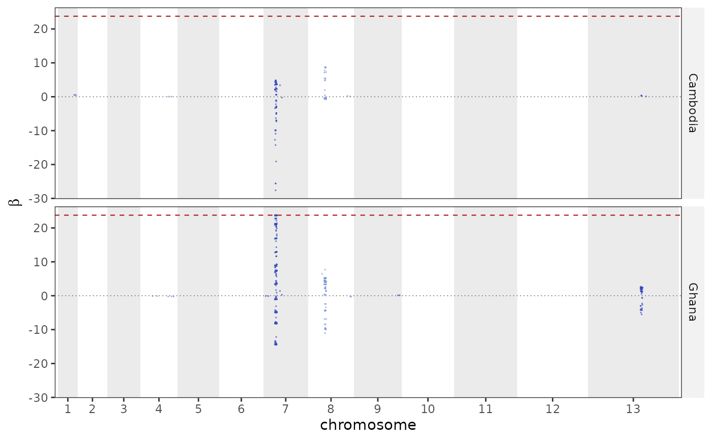

Manhattan plot of beta scores
Usage
plot_beta(
b,
threshold = NULL,
genes = NULL,
highlight_genes = NULL,
label_genes = NULL,
chroms = NULL,
skip_chr = NULL,
zoom = NULL,
zoom_pad = 0.05,
genes_for_track = NULL,
gene_label_angle = 0,
reference = DEFAULT_REFERENCE,
point_size = 0.6,
point_alpha = 0.7,
colours = NULL
)Arguments
- b
The tibble from
beta_score().- threshold
Draw a dashed line at this beta;
NULLuses the 99th percentile of the scores actually plotted, the empirical tail these scans are read at.- genes
Gene table to mark (e.g. PF_EXAMPLE_DRUG_GENES);
NULLfor none.- highlight_genes, label_genes
Which genes to mark and whether to name them.
- chroms, skip_chr
Chromosomes to keep or drop.
- zoom
Optional single interval to crop to, keeping the same data and the same coordinates as the genome-wide plot: a chromosome (
"7"), a range ("7:728,081-988,719"), a gene name fromgenes, or a one-row data frame with chr/start/end. Every gene in the window is drawn and named unlesslabel_genes = FALSE.- zoom_pad
Context to add around
zoom, clamped to the chromosome. One value pads both sides (default 5%); two pad the left and the right, either in that order or named –c(left = 5000, right = 40000), and naming only one side pads only that side. Each side is read on its own: below 1 it is a fraction of the interval's span, at or above 1 it is base pairs, soc(0.1, 20000)is legal.- genes_for_track
Optional gene table for the track drawn beneath a zoomed plot (e.g. PF3D7_GENES), so every gene in the window is shown and named while the plot's own short track still supplies the marked positions inside the panel. Without it the track and the marks come from the same genes, which means marking a whole annotation just to see the neighbours.
- gene_label_angle
Rotation for the gene names in that track, in degrees.
0(default) centres each name under its gene;45or90runs it down to the left, which is what keeps long systematic ids from colliding over a dense annotation.- reference
Reference id for the chromosome layout.
- point_size, point_alpha, colours
Point and band aesthetics.
Examples
ps <- example_pop_structure(umap = FALSE)
b <- beta_score(ps, group = "country", window = 300000, min_window_snps = 1)
plot_beta(b)
